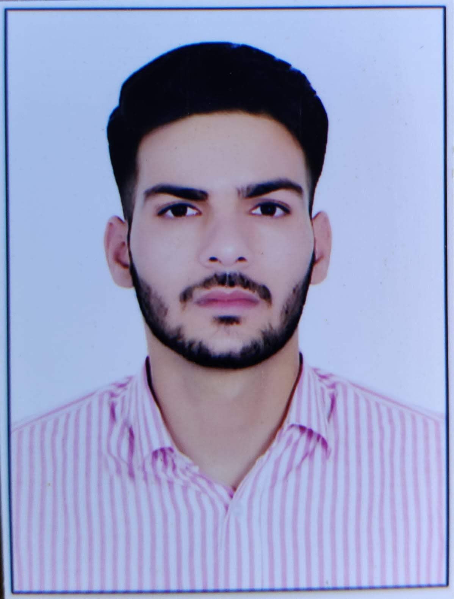

KUSHAL SHARMA

Contact details
OBJECTIVES
To servve the organisation in the best of my abilities and to gain immense practical exposure and become professionally trained
to handle any critical situation.
EDUCATION
-
Bachelors of Engineering:- SLIET
2021-continuing.......
-
Diploma in Engineering:- Aligarh Muslim University
2017-2020
-
Class X:- CBSE board
2015-2017
TECHNICAL SKILLS
-
Programming in c/c++
- Data Structure and Algorithm
- System Assembly and Troubleshooting
- HTML and CSS
- Computer networking
- MS office
PROJECTS
- Project on "Vibrational Analysis on Engineering workshop's Machine tool
- Security System using advanced C++
- GSM based automatic tube wells motoors controller
- Mini Hovercraft
AWARDS AND HONOURS
- Honorary Position: Got 6th category rank among
2 lakhs students in UPCET-LEET (Uttar Pradesh Combined Entrance Test
-Lateral entry)-2021 exam conducted by National Testing Agency (NTA)
- Scholarship and PPO: Won scholarship and PPO offer in Mahindra group through
“Mera Swaraj Education Support Program” in 2021.
- Contest: First prize in “Yogyata” a domain of Techfest-Annual technical fest of collage
- DRDO STA-B: Got selected for post of DRDO-Senior Technical Assistant through the eligibility of
Diploma in Engineering
- Got 2nd prize in TECHFEST -A annual technical event of SLIET (under SLIET HACKTHON and KRITIM).
ADDITIONAL SECTION
- Hobbies : Swimming , Flute Playing, Workout
- Role of Responsibility: A current member of core team of National Service Scheme (NSS)
Member of institute Robotics club “Mavericks”